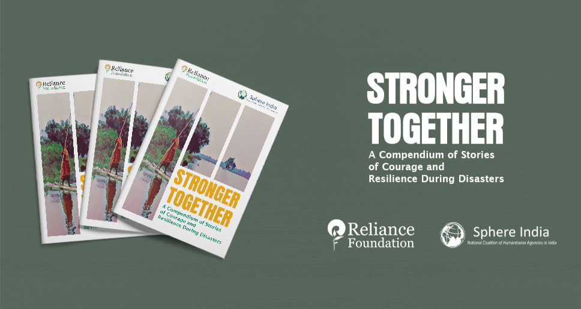
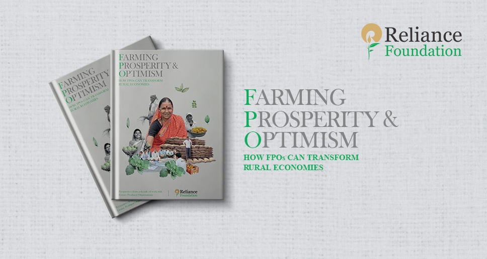
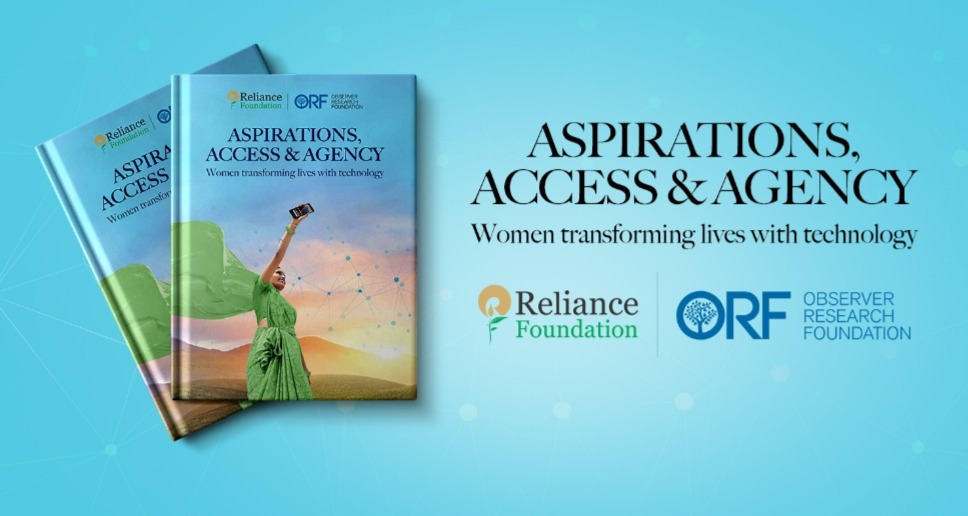
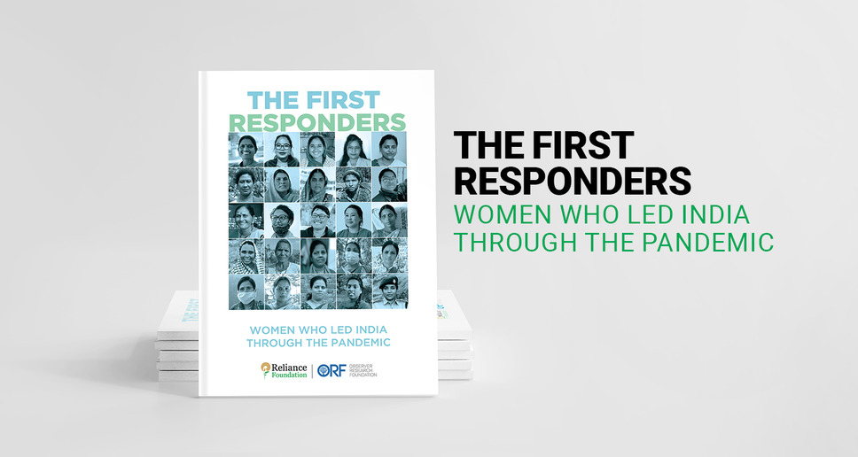
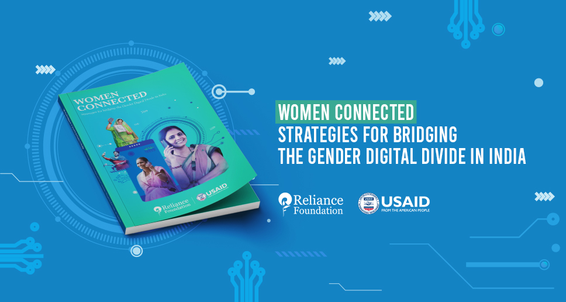
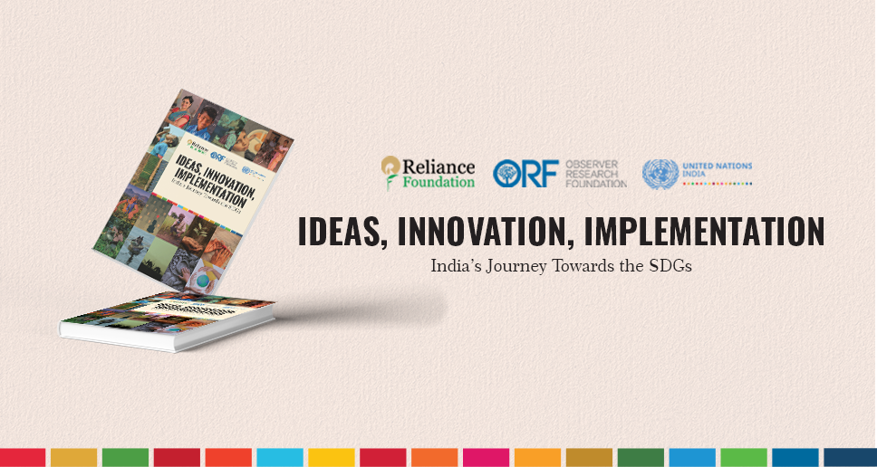
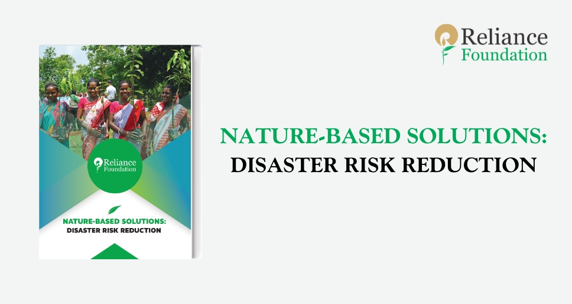
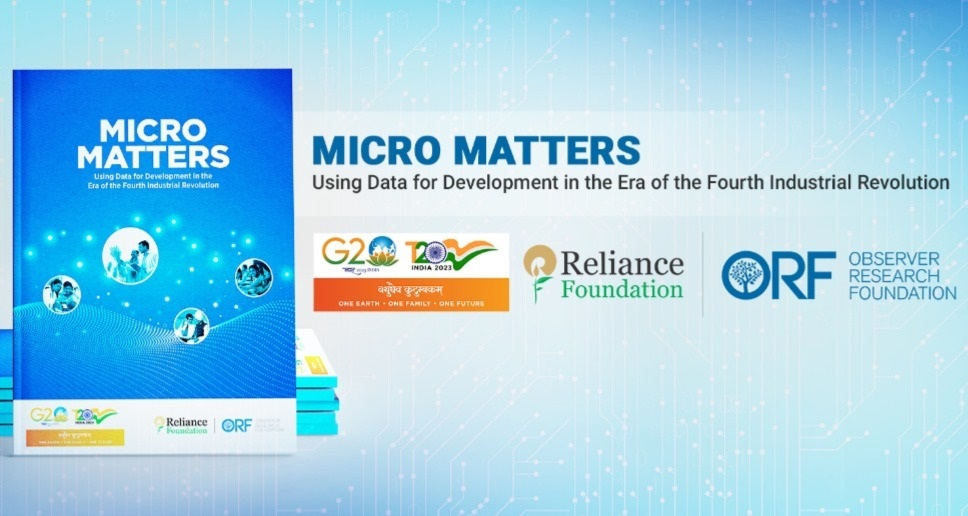
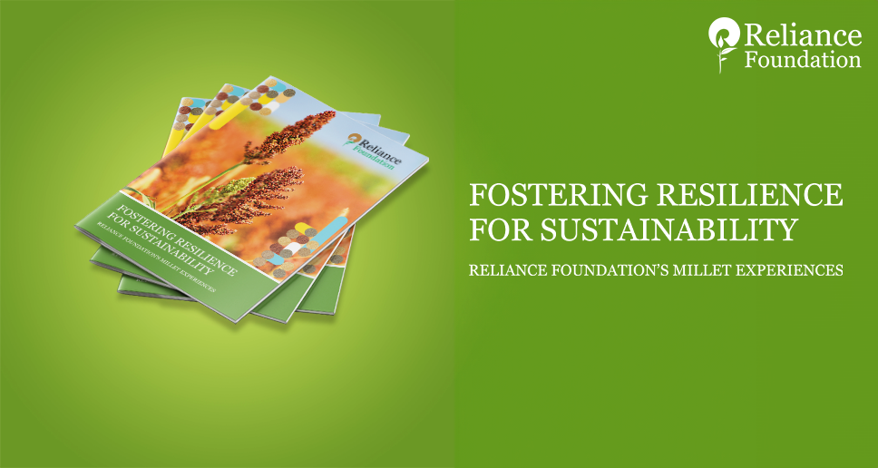

Publications

‘Stronger Together’: A compendium of stories of courage &
resilience during disasters
Stronger Together’: A compendium of stories of courage and
resilience during disasters, prepared by Reliance Foundation and
Sphere India, captures best practices by individuals at the
grassroots level for mitigation, preparedness, and response to
various disasters in India.

How Farmer Producer Organisations can transform Rural Economies
Farming Prosperity & Optimism, a Special Report on how Farmer
Producer Organisations can transform rural economies describes
the Reliance Foundation’s learnings from years of work with
small and marginal farmers through collectivisation for enhanced
livelihood security of farmers.

Aspirations, Access & Agency, Women transforming lives with
technology
Published by Reliance Foundation and Observer Research
Foundation, Aspirations, Access & Agency, Women transforming
lives with technology tells the stories of women leaders who
have emerged as agents of technological change and socioeconomic
inclusion by using tech to help their communities build better
futures.

The First Responders: Women who led India through COVID-19
The First Responders tells the stories of twenty-five Indian
women who have led their communities through the challenges of
the COVID-19 pandemic, and put up safety nets for their
communities. The publication shares lessons in empowerment of
women and how their leadership is crucial especially during a
crisis.

Women Connected: Strategies for Bridging the Gender Digital
Divide in India
This publication serves as a comprehensive resource for
understanding the impact of technology in improving women's
lives. It highlights interventions and shares lessons learned
from the first round of the WomenConnect Challenge India that
was launched in 2020 by Reliance Foundation and the USAID.

Ideas, Innovation, Implementation: India’s Journey Towards the
SDGs
Published by Reliance Foundation in partnership with the
Observer Research Foundation and United Nations India, Ideas,
Innovation, Implementation, showcases 17 lighthouse case studies
from India that could bring about a potential transformation if
scaled and replicated in other geographies.

NATURE-BASED SOLUTIONS : Disaster Risk Reduction
With climate change causing an increase in the frequency and
intensity of disasters, there is an urgent global need to deal
with these risks by taking an interconnected and pluralistic
approach. This publication by Reliance Foundation explores how
nature-based solutions can help communities in preparation,
response, and recovery from natural disasters.

Micro Matters: Using Data for Development in the Era of the Fourth Industrial Revolution
Published by Reliance Foundation and Observer Research Foundation, Micro Matters explores eight interventions by civil society organisations in India that are advancing the country’s D4D agenda by gathering data; processing it to evolve insights; translating insights into actions; and making a social impact.

Fostering Resilience for Sustainability: Reliance Foundation's Millet Experiences
This publication documents learnings from millet interventions in different states was released on the occasion. It showcases end-to-end interventions that include making quality seed accessible to farmers, providing continued technical support, strengthening market linkages, empowering women’s agency and building awareness of millets.